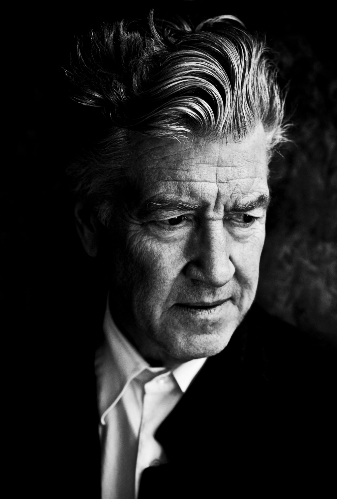
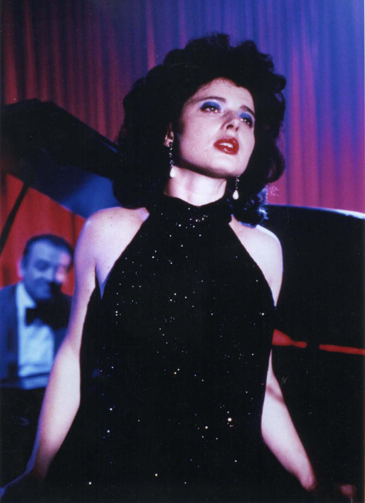

Описание Драматический триллер режиссера Дэвида Линча, номинированный на премии «Оскар» и «Золотой глобус». Студент колледжа Джеффри Бомонт возвращается в свой родной городок Лэмбертон, чтобы навестить отца, попавшего в больницу. Город, как и прежде, производит впечатление благообразного и респектабельного местечка: уютные домики, зеленые ухоженные лужайки, улыбчивые жители… Но так ли он идеален, как кажется на первый взгляд? Джеффри довольно скоро предстоит лично в этом усомниться. Возвращаясь как-то раз из больницы через поле, в траве он находит… отрезанное человеческое ухо. Страшную находку молодой человек решает отнести в полицейский участок к знакомому детективу – мистеру Уильямсу. Тот благодарит юношу за помощь, однако просит не задавать лишних вопросов: Джеффри обо всем узнает, когда придет время. Но заинтригованный Джеффри не хочет упускать шанс получить новый необычный опыт и решает параллельно начать собственное расследование. В нем ему помогает дочь детектива Уильямса, Сэнди. От нее Джеффри узнает, что к случившемуся может быть как-то причастна местная певица Дороти, выступающая по вечерам в баре со своим коронным музыкальным номером «Синий бархат».
РежиссёрДэвид Линч американский кинорежиссёр, сценарист, художник, музыкант, фотограф и актёр. Является представителем американского независимого кинематографа. Обладатель премий «Золотая пальмовая ветвь» и «Золотой лев». Наиболее известен за свои фильмы «Человек-слон», «Твин Пикс», «Малхолланд Драйв», «Простая история» и «Шоссе в никуда». Режиссерский стиль Линча – это сюрреализм и мистика, но без киношных штампов. В его фильмах чувствуется мощная энергетика, которая захватывает зрителей с первого кадра и не отпускает до титров.
Кайл Маклахлен американский актёр, ставший известным в роли специального агента ФБР Дейла Купера в телесериале Дэвида Линча «Твин Пикс». В 24 года началась карьера Кайла Маклахлена. Дэвид Линч, по заявлению Кайла, — очень требовательный режиссёр. Он видит образ актёра и приглашает его на съёмки. Так Маклахлен стал играть роли «людей со странностями». В 1986 году он участвует в новом сюрреалистическом триллере Линча «Синий бархат». После этого фильма Кайл Маклахлен стал звездой первой величины. Это позволило ему выбирать себе роли. В 1989 году актёр соглашается сыграть в телесериале «Твин Пикс». Этот сериал открыл всему миру Кайла Маклахлена не как красавца, которыми славится Голливуд, а как настоящего актёра. «Твин Пикс», который по всему миру прошёл с большим успехом как у критиков, так и зрителей, и получил ряд наград, в том числе «Эмми», Пибоди и «Золотой глобус». Он стал узнаваем и очень знаменит.
Драматургия: традиция нуара, повторяемость и рондо Размышляя о драматургии «Синего бархата», Изабелла Росселлини замечает следующее: «В фильмах Дэвида в большей степени транслируется чувственный опыт, чем рассказывается история. Это не исследования характеров с антропологической или психологической точки зрения. Это сюрреалистические впечатления». Таким образом, сама история и характеры в фильме имеют второстепенное значение по отношению к комплексу существующих образов, обращенных прежде всего к подсознанию зрителя. Тем не менее, в драматургии фильма можно выделить несколько особенностей. Прежде всего, Линч эксплуатирует здесь целый ряд стандартных драматургических клише массового кинематографа. Например, в основе лежат не только стандартные мотивы детектива и триллера, но и традиционный сюжет «искушения невинного», когда молодой и наивный герой знакомится с суровой изнанкой жизни. Героиня Изабеллы Росселлини — это усовершенствованная трактовка обязательной для любого нуара femme fatale. К традиции нуара также восходит и мотив двойственности, внутренней конфликтности персонажей, сочетание в большинстве из них как светлых, так и темных качеств. Другая особенность встречается в некоторых других картинах Линча — рондо и повторяемость событий. Фильм заканчивается теми же сценами, что и начинается, а ряд действий происходит как минимум дважды. Таким образом, повторения обязательно выводят уже знакомое действие на новый уровень, придают ему новое значение. Та же концовка, повторяющая начало, смотрится второй раз уже не столь лучезарно. Линч объясняет этот эффект так — после пережитого герой больше не сможет отделаться от своих страхов и будет вынужден жить с ними. То же можно сказать и о зрителе. Автор статьи: Крыж У.С.Опубликовано: 17.10.2020